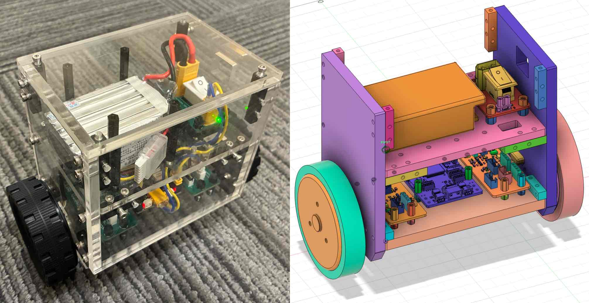
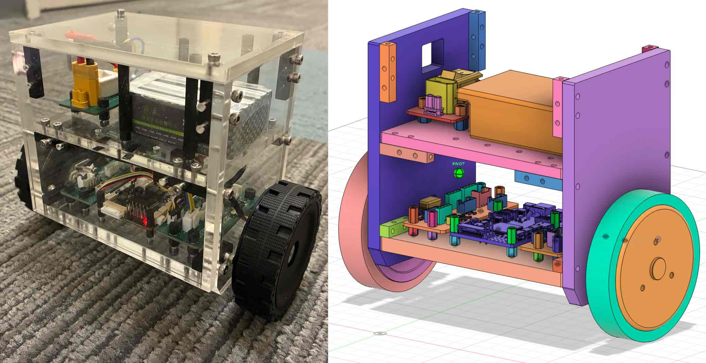

STM32H7
Main controller for FreeRTOS tasks, SPI, ADC, UART, DMA, motor links, and telemetry.

ROB-GY 5103 - Mechatronics
An STM32H7-based inverted-pendulum platform integrating IMU sensing, motor communication, real-time balance control, telemetry, and a mobile joystick interface.
Team: Sammy Suliman, Albert / Yuyang Huang - Spring 2026
Design Objective
The project turns a deliberately unstable two-wheel body into a robotics platform that can sense pitch, command motors, observe power, accept user input, and support repeatable tuning.
System Architecture
Technical Background
Because the center of mass sits above the wheel axle, the body falls unless the controller keeps moving the support point underneath it. The minimum loop is fast and unforgiving.
Electrical Components
Main controller for FreeRTOS tasks, SPI, ADC, UART, DMA, motor links, and telemetry.
Provides attitude data for body pitch and angular rate estimation.
Wheel actuation via serial command frames and later feedback experiments.
Supply monitoring through an 11x divider and DMA-backed ADC samples.
Bring-up indicators and peripheral exercises on the STM32L475 and H7 stacks.
LiPo pack, switch board, XT connectors, charger experiments, and power-enable lines.
Motor Communication
The team learned that a board can transmit commands and still fail at feedback because voltage levels, idle state, direction, and timing must work both ways. The later design uses STM32 half-duplex UART with TX/RX inversion.
UART7 / USART10
baud: 38400
mode: half-duplex
signal: TX/RX inversion
transport: DMA RX + DMA TX
purpose: left/right motor linksMechanical Design
For a balancing robot, flex, loose mounts, connector strain, and a shifting battery all change the controller's job. The prototype keeps the motor boards, battery, switch board, and wiring accessible for rework during tuning.

Software Architecture
HAL, clocks, GPIO, DMA, SPI, USART, ADC, DWT timing, BMI088 init, UART logging, VOFA telemetry, FreeRTOS objects, scheduler.
Wi-Fi Joystick Layer
The ESP32-S3 web joystick is meant to provide speed and turning references. Those references should bias the balance controller, while the STM32H7 remains responsible for keeping the body upright.
Testing and Results
Oscilloscope verified motor-control signal; first Vlink motor rotation.
Signal-conversion boards soldered and motor rotation tested.
STM32 environment configured; OLED wiring established on L475.
RTOS, SPI-DMA, UART, ADC voltage, and RGB LED experiments completed.
Switch board, XT connectors, charger workflow, and open-drain tests advanced.
Motor control, ADC Vbus, UART motor work, feedback, and wiring tests continued.
Cost Analysis
The report estimates roughly $300, with most of the budget concentrated in motors, control boards, battery hardware, and mechanical/debug support.
Final Remarks
The work captured real mechatronics lessons: level shifting assumptions, CubeMX regeneration risk, low-speed motor behavior, power-source behavior, wiring mistakes, and the need for logged tuning data.
Select one authoritative release folder and archive historical versions.
Add a clean wiring diagram with connector pinouts for motor links, SPI IMU, ADC Vbus, debug UART, and ESP32-S3.
Log pitch, angular velocity, wheel command, motor feedback, and Vbus at a fixed rate.
Add a safety state machine: disarmed, armed, balancing, fault, recovery.
Document the final gains and the tuning symptom each gain affected.